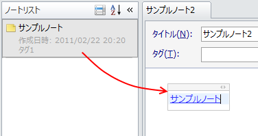

リンクを張る
他のノートやWebページへのリンクを張ることができます。
ノートリストペインからドラッグ&ドロップ
ノートリストペインからノートをドラッグ&ドロップすることで ドロップしたノートへのリンクを追加できます。

Internet ExplorerやFirefoxからドラッグ&ドロップ
Internet ExplorerやFirefoxのアドレスバーのアイコンをドラッグ&ドロップすることで ドロップしたWebページへのリンクを追加できます。
テキストの選択範囲にリンクを張る
ノート内のテキストに後からリンクを設定することができます。
まずリンクにしたい文字列を範囲選択して右クリックし， コンテキストメニューの「リンクを設定」を選択します。
「リンクの設定」ダイアログが表示されるのでリンク先にしたいノートを選択して「OK」ボタンを押します。 Webページへのリンクを設定するには「リンク先」リストボックスで「Web」を選択して「アドレス」テキストボックスにURLを入力します。